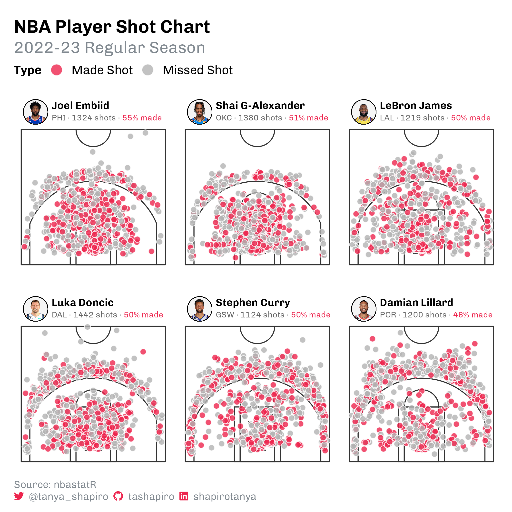
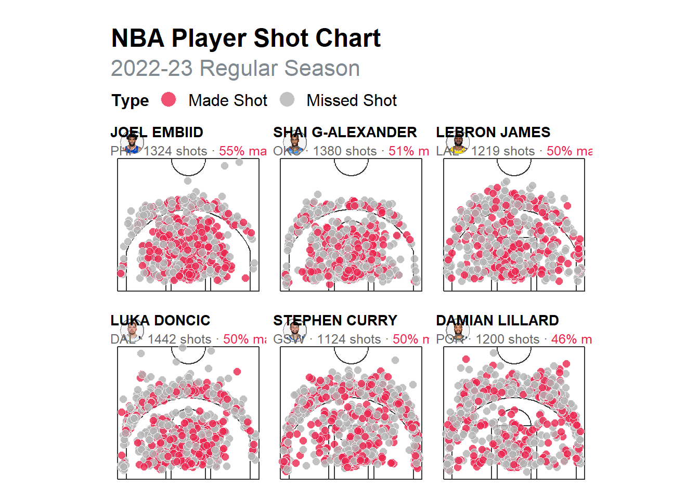
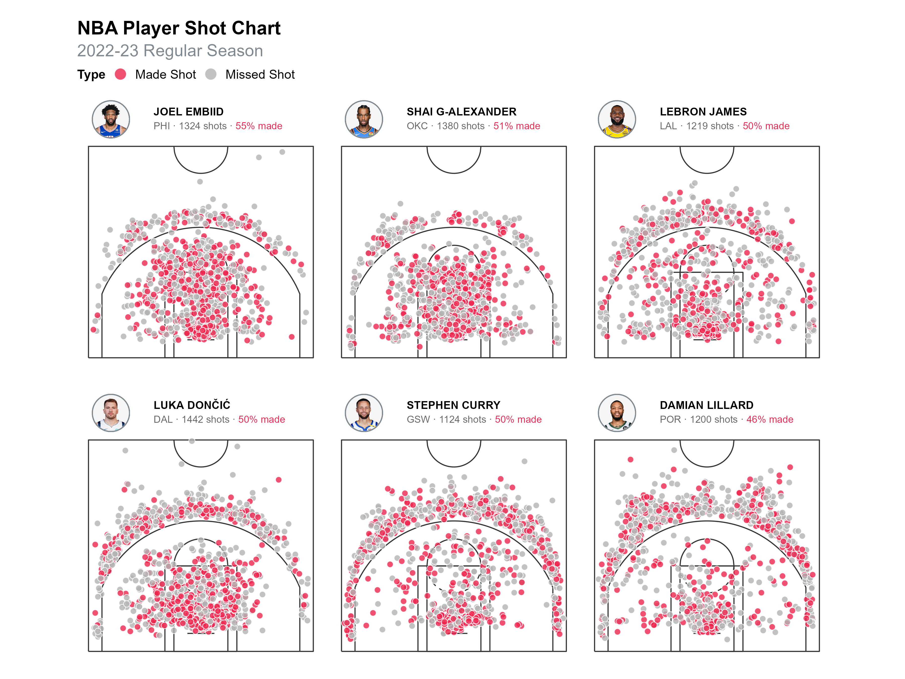

# Load required libraries
library(tidyverse)
library(BasketballAnalyzeR)
library(nbastatR)
library(ggimage)
library(cropcircles)
library(ggtext)
library(glue)
library(janitor)
library(htmltools)
library(sysfonts)
# Set a grey color for consistency in the visualization
grey <- '#818990'
# Use the Chivo font (you must install this locally)
font <- sysfonts::font_add("Chivo", "./fonts/Chivo/Chivo-VariableFont_wght.ttf")This tutorial will walk you through in detail how to recreate Tanya Shapiro’s NBA shots visualization below.
I hope you enjoy this because at each stage of recreating this dataviz is like solving a puzzle!

We’re going to re-engineer the above dataviz in the following steps:
- Load the required libraries
tidyverse: For data manipulation and plotting.BasketballAnalyzeR,nbastatR: For basketball-specific datasets.ggimage,cropcircles: To work with images, like player headshots.ggtext,glue: To enhance text formatting in ggplot.janitor,htmltools: For cleaning and styling data.
- Customize the enviroment for large datasets
Set colors and fonts (
greycolor and Chivo font).Adjust environment settings (
VROOM_CONNECTION_SIZE) to handle large datasets.
- Data acquisition
- Pull shot data for specific teams and players for the 2022-2023 season using
nbastatR::teams_shots.
- Pull shot data for specific teams and players for the 2022-2023 season using
- Filter and scale the data
Filter shots for the selected players.
Scale
xandycoordinates to fit the basketball court dimensions.Remove shots beyond half-court range
- Calculate the player stats
- Group and summarize shot statistics by player and type of event (made or missed shots)
- Create the visualization
Use
ggplot2to create shot charts with points for made (red) and missed (grey) shots.Add player-specific elements like headshots and text annotations
1 Load the required libraries
2 Customization for large datasets
# Increase connection size for handling large datasets
Sys.setenv(VROOM_CONNECTION_SIZE = 500072)Environment Settings: Ensures a large enough connection buffer to handle the data.
3 Data acquisition
# Get shot data for specific teams in the 2022-23 season
shots <- nbastatR::teams_shots(
team_ids = c('1610612744', '1610612747', '1610612755', '1610612742', '1610612760', '1610612757'),
seasons = 2023
)Dallas Mavericks 2022-23 shot data
Golden State Warriors 2022-23 shot data
Los Angeles Lakers 2022-23 shot data
Philadelphia 76ers 2022-23 shot data
Portland Trail Blazers 2022-23 shot data
Oklahoma City Thunder 2022-23 shot datahead(shots)# A tibble: 6 × 27
yearSeason slugSeason idTeam idPlayer typeGrid namePlayer nameTeam typeEvent
<dbl> <chr> <dbl> <dbl> <chr> <chr> <chr> <chr>
1 2023 2022-23 1.61e9 203493 Shot Ch… Reggie Bu… Dallas … Missed S…
2 2023 2022-23 1.61e9 1629029 Shot Ch… Luka Donč… Dallas … Made Shot
3 2023 2022-23 1.61e9 203915 Shot Ch… Spencer D… Dallas … Missed S…
4 2023 2022-23 1.61e9 1629029 Shot Ch… Luka Donč… Dallas … Made Shot
5 2023 2022-23 1.61e9 1629029 Shot Ch… Luka Donč… Dallas … Missed S…
6 2023 2022-23 1.61e9 1629029 Shot Ch… Luka Donč… Dallas … Made Shot
# ℹ 19 more variables: typeAction <chr>, typeShot <chr>, dateGame <chr>,
# slugTeamHome <chr>, slugTeamAway <chr>, idGame <dbl>, idEvent <dbl>,
# numberPeriod <dbl>, minutesRemaining <dbl>, zoneBasic <chr>,
# nameZone <chr>, slugZone <chr>, zoneRange <chr>, locationX <dbl>,
# locationY <dbl>, secondsRemaining <dbl>, distanceShot <dbl>,
# isShotAttempted <lgl>, isShotMade <lgl>Shot Data: The nbastatR::teams_shots function retrieves shot data for selected teams
4 Filtering and scaling data
This step refines the dataset by:
Keeping only the selected players’ data.
Scaling the
xandyshot coordinates to fit the court dimensions.Removing shots taken from beyond half-court
# Filter for specific players and scale the x and y coordinates
shots_player <- shots |>
filter(namePlayer %in% c("LeBron James", "Stephen Curry", "Joel Embiid",
"Luka Dončić", "Damian Lillard", "Shai Gilgeous-Alexander")) |>
# Scale x and y coordinates (court dimensions adjusted manually)
mutate(x = (locationX / 10) - 0,
y = (locationY / 10) - 41.75) |>
# Remove shots from beyond half-court range
filter(y < 0)4.0.0.1 Explanation
filter: Narrows down the dataset to the six players of interest.mutate: Adjusts thexandycoordinates to align with the court. The scaling factors and offsets (/10and-41.75) are based on court dimensions.filter(y < 0): Removes data for shots taken from the opponent’s half.
5 Calculating player stats
Calculate each player’s shooting performance (made vs. missed shots).
# Group data by player and event type, then calculate stats
player_stats <- shots_player |>
group_by(namePlayer, nameTeam, typeEvent) |>
summarize(total_shots = n(), .groups = 'drop') |>
pivot_wider(names_from = typeEvent, values_from = total_shots, values_fill = 0) |>
janitor::clean_names() |>
mutate(total = made_shot + missed_shot,
accuracy = round(100 * made_shot / total, 1)) %>%
ungroup()|>
arrange(-accuracy)5.0.0.1 Explanation
group_by: Groups data by player, team, and shot type (e.g., made or missed).summarize: Counts the total shots for each group.pivot_wider: Reshapes the data to have columns forMADEandMISSEDshots.mutate: Adds columns for total shots and shooting accuracy (percentage).
6 Creating the visualization
# custom data frame with images (from espn) and labels to pass into ggtext
images <- data.frame(
namePlayer = c("Joel Embiid","Luka Dončić","LeBron James","Stephen Curry","Damian Lillard","Shai Gilgeous-Alexander"),
label = c("Joel Embiid","Luka Dončić","LeBron James","Stephen Curry","Damian Lillard","Shai G-Alexander"),
image = c("https://a.espncdn.com/combiner/i?img=/i/headshots/nba/players/full/3059318.png",
"https://a.espncdn.com/combiner/i?img=/i/headshots/nba/players/full/3945274.png",
"https://a.espncdn.com/combiner/i?img=/i/headshots/nba/players/full/1966.png",
"https://a.espncdn.com/combiner/i?img=/i/headshots/nba/players/full/3975.png",
"https://a.espncdn.com/combiner/i?img=/i/headshots/nba/players/full/6606.png",
"https://a.espncdn.com/combiner/i?img=/i/headshots/nba/players/full/4278073.png")
)|>
left_join(player_stats, by=c("namePlayer"="name_player"))|>
left_join(df_dict_nba_teams|>select(nameTeam,slugTeam), by=c("name_team"="nameTeam"))|>
mutate(text_label = glue("<span style='font-size:14px;'>**{toupper(label)}**</span><br><span style='font-size:12.5px;color:grey40;'>{slugTeam} · {total} shots · </span><span style='color:#ED254E;font-size:12.5px;'>{round(accuracy,0)}% made</span>"))
# circle crop images
images$cropped <- cropcircles::circle_crop(images=images$image, border_size = 1, border_colour = "whitesmoke")
# factor players by accuracy
shots_player$namePlayer <- factor(shots_player$namePlayer, levels = player_stats$name_player)
images$namePlayer <- factor(images$namePlayer, levels = player_stats$name_player)….
#add court drawings
BasketballAnalyzeR::drawNBAcourt(ggplot(data=shots_player),
size=0.5, col="grey20")+
#shot data
geom_point(data=shots_player,
mapping=aes(x=x,y=y, fill=typeEvent),
shape=21, color="white", size=2.5, alpha=0.8)+
#backdrop image with fill to create border
geom_image(data=images, mapping=aes(x=-20, y=6, image=cropped), color="#818990", size=0.16, asp=1/1.2)+
#player image
geom_image(data=images, mapping=aes(x=-20, y=6, image=cropped), size=0.15, asp=1/1.2)+
#text per player with name, team, and stats
ggtext::geom_textbox(data=images, mapping=aes(x=5, y=6, label=text_label),
fill=NA, box.size=NA
) +
scale_fill_manual(values=rev(c("grey70","#ED254E")))+
scale_y_continuous(expand=c(0.1,0.2))+
facet_wrap(~namePlayer, ncol=3)+
coord_equal()+
guides(fill = guide_legend(override.aes=list(size=5)))+
labs( fill="Type",
title="NBA Player Shot Chart",
subtitle = "2022-23 Regular Season"
)+
theme(legend.position = "top",
legend.title = element_text(face="bold", size=12),
plot.margin = margin(t=20),
legend.text = element_text(size=12),
legend.margin = margin(rep(0,4)),
strip.text = element_blank(),
strip.background = element_blank(),
legend.key = element_blank(),
axis.text = element_blank(),
legend.justification = "left",
#text = element_text(family=font),
panel.background = element_blank(),
plot.title = element_text(face="bold", size=18),
plot.subtitle = element_text(color="#818990", size=16, margin=margin(b=5)),
panel.grid.minor=element_blank(),
plot.caption = element_textbox_simple(hjust=0.01, color="#818990", margin=margin(b=10), size=10),
# panel.grid.major = element_line(color="grey90", linewidth=0.3),
axis.title=element_blank(),
axis.ticks = element_blank())
…
#save
# ggsave("nba-shots-final.png", bg="white" , height=9, width=12, units="in")